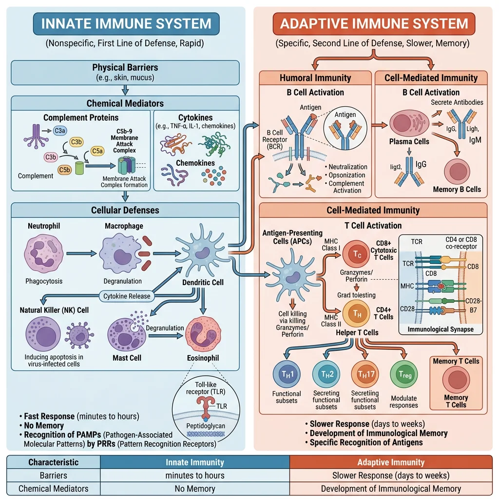
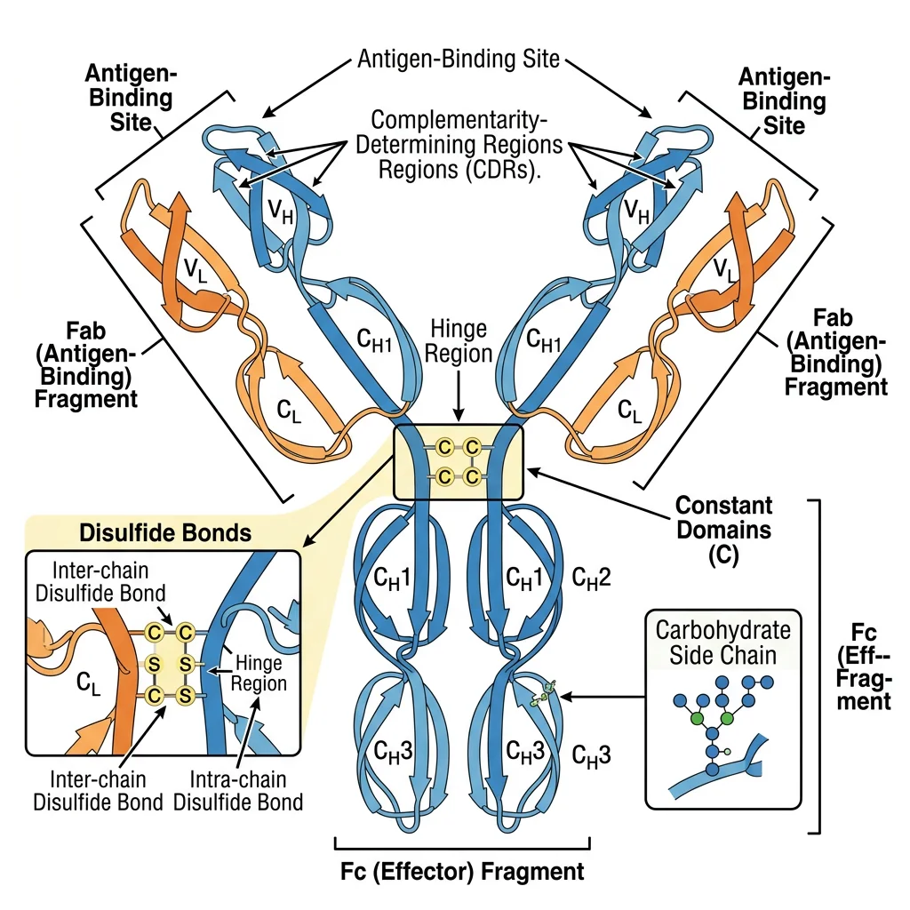
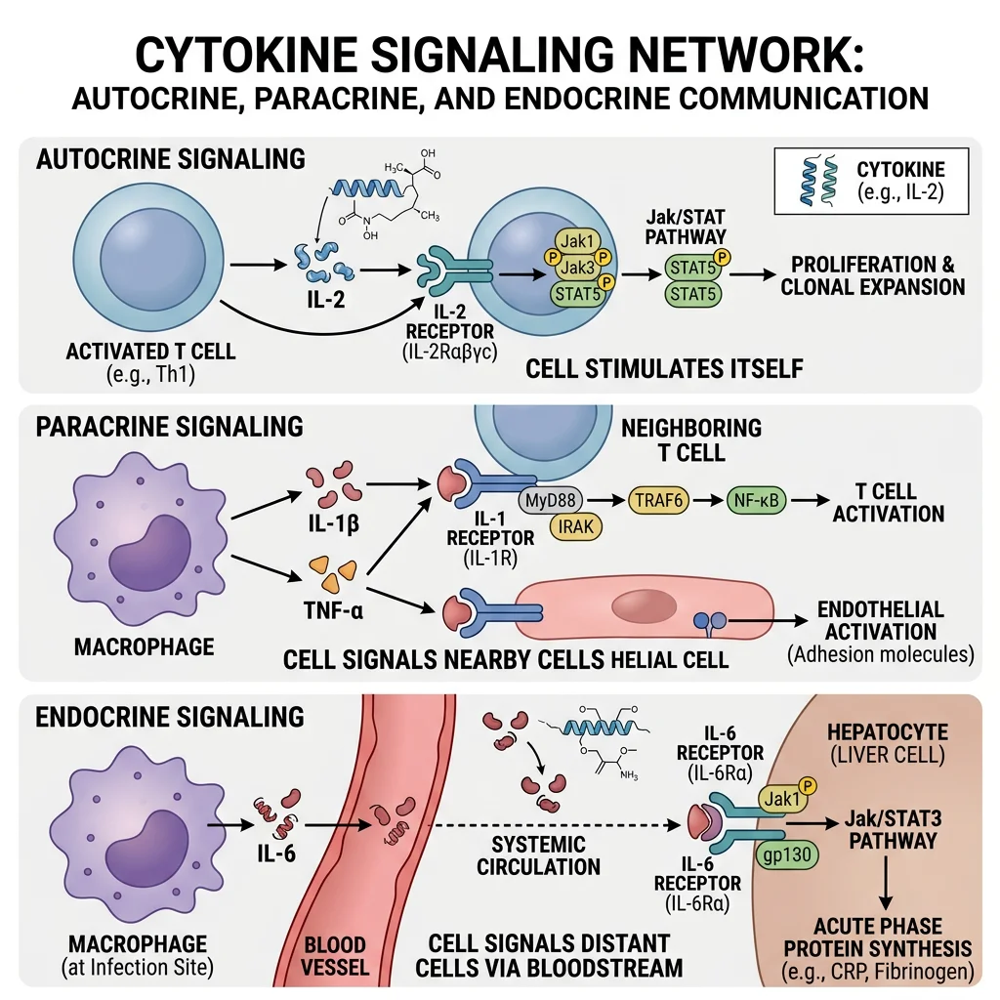
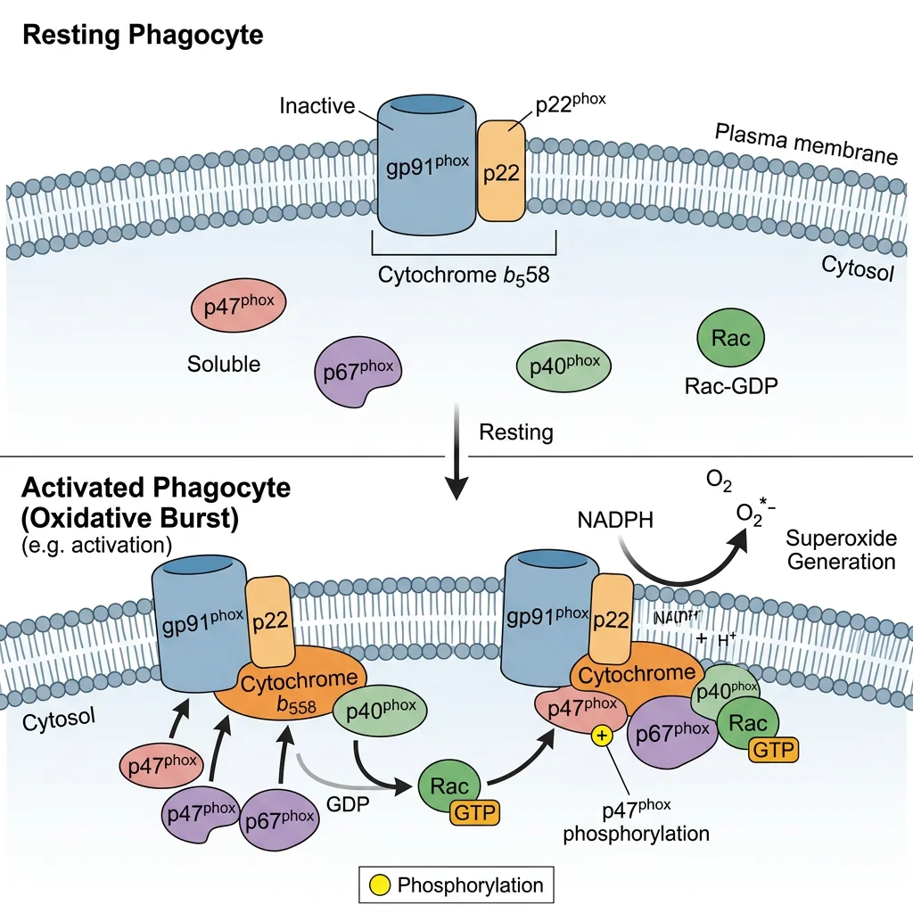
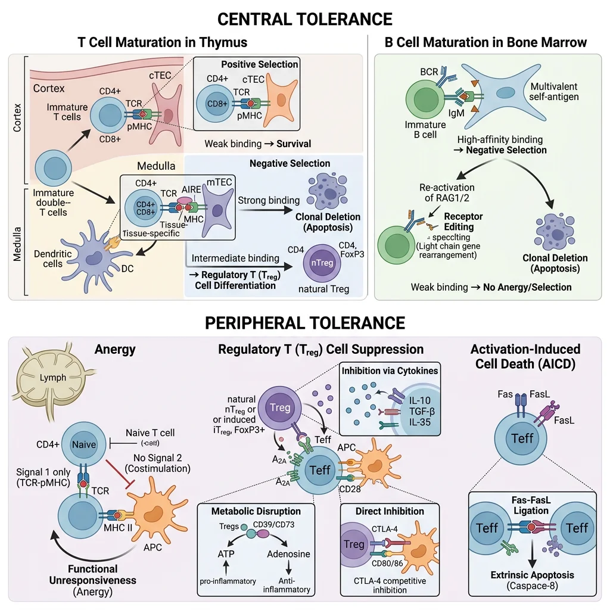

Biochemistry Mastery
Biological Chemistry Fundamentals
Atoms, bonds, functional groups, thermodynamicsWater, pH & Biological Buffers
Water polarity, pH, Henderson-Hasselbalch, blood buffersAmino Acids & Protein Structure
Amino acid classes, peptide bonds, protein foldingEnzymes & Catalysis
Kinetics, Michaelis-Menten, inhibition, regulationCarbohydrates & Lipids
Sugars, glycogen, fatty acids, cholesterol, membranesMetabolism & Bioenergetics
ATP, glycolysis, gluconeogenesis, redox carriersCitric Acid Cycle & Oxidative Phosphorylation
Acetyl-CoA, ETC, ATP synthase, oxygen dependenceSignal Transduction & Cell Communication
GPCRs, kinases, calcium, hormone cascadesNucleic Acids & Gene Expression
DNA, replication, transcription, translation, epigeneticsBrain & Nervous System Biochemistry
Neurotransmitters, ion gradients, myelin, neurodegenerationHeart & Muscle Biochemistry
Cardiac metabolism, actin-myosin, energy systemsLiver Biochemistry
Glucose homeostasis, detox, urea cycle, bileKidney Biochemistry & Acid-Base
pH regulation, ion transport, hormonal functionsEndocrine System Biochemistry
Hormone classes, signaling, glucose & stress controlDigestive System Biochemistry
Gastric acid, enzymes, bile, absorption, microbiomeImmune System Biochemistry
Antibodies, cytokines, complement, oxidative burstAdipose Tissue & Energy Balance
Triglycerides, lipolysis, leptin, obesityTissue-Specific Metabolism
Fed vs fasting, organ fuel selection, starvationMolecular Basis of Disease
Diabetes, cancer metabolism, neurodegenerationClinical Biochemistry & Diagnostics
Blood tests, liver/kidney markers, lipid panelsInnate vs Adaptive Immunity Overview
The immune system is a biochemical defence network that distinguishes self from non-self and eliminates pathogens, damaged cells, and tumour cells. It operates through two complementary arms: innate immunity (rapid, non-specific, no memory) and adaptive immunity (slower, highly specific, immunological memory). Think of innate immunity as a well-trained security guard who blocks all suspicious-looking intruders, while adaptive immunity is a detective who studies the intruder's face, creates a wanted poster, and remembers it forever.

| Feature | Innate Immunity | Adaptive Immunity |
|---|---|---|
| Response time | Minutes to hours | Days to weeks (primary); hours (secondary) |
| Specificity | Broad (pattern recognition) | Highly specific (antigen receptors) |
| Memory | None (or limited "trained immunity") | Yes — memory B and T cells |
| Recognition | PAMPs via PRRs (TLRs, NLRs, RLRs) | Epitopes via BCR/TCR |
| Key cells | Neutrophils, macrophages, NK cells, DCs | B cells, T cells (CD4⁺, CD8⁺) |
| Soluble mediators | Complement, lysozyme, defensins, CRP | Antibodies, cytokines |
| Diversity | Limited (germline-encoded) | Enormous (V(D)J recombination: >10¹¹ receptors) |
Innate Immune Defenses
Innate immunity uses pattern-recognition receptors (PRRs) that detect conserved molecular signatures shared by broad classes of pathogens — called pathogen-associated molecular patterns (PAMPs). These molecular patterns are essential to microbial survival and therefore cannot be easily mutated away, making them reliable alarm signals.
Toll-Like Receptors (TLRs) — The Sentinels
TLRs are type I transmembrane proteins with leucine-rich repeat (LRR) ectodomains and intracellular TIR domains. Humans express 10 TLRs, each recognising distinct PAMPs:
- TLR4: LPS (Gram-negative bacteria) → MyD88 → NF-κB → TNF-α, IL-1β, IL-6
- TLR2/1 or TLR2/6: Lipoproteins, peptidoglycan (Gram-positive bacteria)
- TLR3: Double-stranded RNA (viruses) → TRIF → IRF3 → Type I interferons (IFN-α/β)
- TLR7/8: Single-stranded RNA (influenza, HIV) → IFN-α production
- TLR9: Unmethylated CpG DNA (bacteria) → IFN-α, IL-12
- TLR5: Flagellin (motile bacteria) → NF-κB activation
The 2011 Nobel Prize in Physiology or Medicine was awarded to Jules Hoffmann and Bruce Beutler for their discoveries of TLR/innate immunity activation, and Ralph Steinman for the discovery of dendritic cells — the bridge between innate and adaptive immunity.
The Inflammasome — A Molecular Alarm System
The NLRP3 inflammasome is a cytoplasmic multi-protein complex that detects "danger signals" — including ATP, uric acid crystals, cholesterol crystals, amyloid-β, and bacterial toxins. Assembly: NLRP3 sensor → ASC adaptor → pro-caspase-1. Active caspase-1 cleaves pro-IL-1β and pro-IL-18 into their active forms, and also cleaves gasdermin D, whose N-terminal domain forms membrane pores causing pyroptosis — inflammatory cell death. Dysregulated NLRP3 underlies gout (urate crystals), atherosclerosis (cholesterol crystals), and cryopyrin-associated periodic syndromes (CAPS). The CANTOS trial showed that canakinumab (anti-IL-1β monoclonal antibody) reduces cardiovascular events, validating the inflammation-atherosclerosis link.
Adaptive Immune Response
Adaptive immunity achieves its extraordinary specificity through somatic gene rearrangement — the random recombination of V (variable), D (diversity), and J (joining) gene segments catalysed by RAG1/RAG2 recombinases. This process generates a theoretical receptor diversity of >10¹¹ unique antigen receptors from a finite genome.
V(D)J Recombination — Generating Diversity
The biochemistry of antigen receptor diversity involves multiple mechanisms:
- Combinatorial diversity: Random V-D-J (heavy chain) or V-J (light chain) joining — ~10⁶ combinations for immunoglobulins
- Junctional diversity: Imprecise joining at V-D and D-J junctions + random N-nucleotide addition by terminal deoxynucleotidyl transferase (TdT) — adds ~10³-fold diversity
- Heavy-light chain pairing: Random combination of heavy and light chains
- Somatic hypermutation (SHM): After antigen encounter, activation-induced cytidine deaminase (AID) introduces point mutations in variable regions at 10⁻³ per bp per generation — 10⁶× the spontaneous mutation rate — followed by selection for higher-affinity variants (affinity maturation)
Susumu Tonegawa received the 1987 Nobel Prize for discovering the genetic principle of antibody diversity through V(D)J recombination.
Edward Jenner & the Birth of Vaccination (1796)
When Edward Jenner inoculated 8-year-old James Phipps with cowpox material from milkmaid Sarah Nelmes, then challenged him with virulent smallpox, he demonstrated cross-protective immunity — what we now understand as shared epitopes between cowpox and variola virus proteins recognised by memory T and B cells. This empirical experiment, performed 100 years before the discovery of antibodies, established the principle of vaccination. The biochemical basis: cowpox surface glycoproteins share sufficient amino acid sequence homology with smallpox that memory B cells producing cross-reactive antibodies provide sterilising immunity upon re-exposure. Vaccination has since eradicated smallpox (1980) and nearly eliminated polio, saving an estimated 154 million lives in the past 50 years.
Antibody Structure & Immunoglobulin Classes
Antibodies (immunoglobulins) are Y-shaped glycoproteins produced by plasma cells (differentiated B cells). Each antibody consists of four polypeptide chains: two identical heavy chains (~50 kDa each) and two identical light chains (~25 kDa each, either κ or λ), held together by disulphide bonds. The molecule has two functional regions: the Fab (fragment antigen-binding) region containing the variable domains (VH + VL) that recognise antigen with exquisite specificity, and the Fc (fragment crystallisable) region that mediates effector functions by binding Fc receptors on immune cells, C1q complement, and neonatal FcRn.

The Five Immunoglobulin Classes
Heavy chain constant region isotype determines the class and biological function:
| Class | Heavy Chain | Structure | Serum % | Key Functions | Clinical Significance |
|---|---|---|---|---|---|
| IgG | γ (4 subclasses) | Monomer | 75% | Opsonisation, complement, ADCC, placental transfer (FcRn) | Most therapeutic antibodies; deficiency → recurrent infections |
| IgA | α (2 subclasses) | Dimer (secretory) | 15% | Mucosal immunity, neutralisation (gut, respiratory, GU) | IgA nephropathy; selective IgA deficiency (1:500) |
| IgM | μ | Pentamer | 10% | First responder; potent complement activation (10 Ag-binding sites) | Elevated in primary response; Waldenström macroglobulinaemia |
| IgE | ε | Monomer | <0.01% | Mast cell/basophil degranulation, anti-parasitic defence | Allergic disease; omalizumab (anti-IgE) therapy |
| IgD | δ | Monomer | <1% | BCR co-expression with IgM on naïve B cells | Function largely unknown; possible mucosal role |
Class Switch Recombination (CSR)
B cells initially express IgM and IgD. Upon T cell help (CD40L–CD40 interaction + cytokine signals), AID (activation-induced cytidine deaminase) introduces DNA double-strand breaks in switch (S) regions upstream of each constant gene, enabling recombination that replaces Cμ with Cγ, Cα, or Cε while preserving antigen specificity. Cytokines direct the isotype: IL-4 → IgE (allergic), IFN-γ → IgG1/IgG3 (opsonisation), TGF-β + IL-5 → IgA (mucosal). Hyper-IgM syndrome (CD40L or AID deficiency) demonstrates what happens when CSR fails — patients have elevated IgM but absent IgG/IgA/IgE, suffering recurrent pyogenic and opportunistic infections.
Antigen-Antibody Interactions
Antigen-antibody binding occurs at the paratope (antibody combining site formed by CDR loops 1–3 of both VH and VL) and the epitope (antigenic determinant, typically 5–7 amino acids or sugar residues). The interaction is non-covalent — driven by hydrogen bonds, van der Waals forces, electrostatic interactions, and hydrophobic effects — yet achieves dissociation constants (Kd) as low as 10⁻¹² M (femtomolar) through the collective strength of multiple weak bonds in a precisely complementary interface.
Monoclonal Antibodies — Precision Medicine
The 1975 hybridoma technique by Köhler and Milstein (Nobel Prize 1984) enabled production of monoclonal antibodies (mAbs) — identical antibodies from a single B cell clone. Modern therapeutic mAbs are engineered for human compatibility (-ximab → chimeric, -zumab → humanised, -umab → fully human) and represent the fastest-growing drug class: trastuzumab (anti-HER2, breast cancer), adalimumab (anti-TNF-α, autoimmunity — highest-revenue drug in history), nivolumab/pembrolizumab (anti-PD-1, checkpoint immunotherapy), rituximab (anti-CD20, B cell lymphoma). Bispecific antibodies (e.g., blinatumomab — anti-CD3/anti-CD19) simultaneously engage T cells and tumour cells, creating an immunological synapse for targeted killing.
Cytokines & Inflammatory Signaling
Cytokines are small secreted proteins (typically 8–40 kDa) that orchestrate virtually every aspect of the immune response. Unlike hormones that act at long range from dedicated glands, cytokines are produced by many cell types and act in autocrine (on the producing cell), paracrine (on neighbouring cells), or occasionally endocrine (systemic) fashion. They exhibit pleiotropy (one cytokine, multiple effects), redundancy (multiple cytokines, same effect), synergy, and antagonism — creating a complex cytokine network that fine-tunes immune responses.

Major Cytokine Families
The cytokine superfamily is classified by receptor structure and signalling pathway:
| Family | Key Members | Signalling Pathway | Principal Functions |
|---|---|---|---|
| Interleukins | IL-1, IL-2, IL-4, IL-6, IL-10, IL-12, IL-17, IL-23 | JAK-STAT, NF-κB, MAPK | T cell differentiation, B cell activation, inflammation, anti-inflammatory regulation |
| Interferons | IFN-α, IFN-β (Type I); IFN-γ (Type II); IFN-λ (Type III) | JAK-STAT (STAT1/STAT2 + IRF9 → ISGF3) | Antiviral state (ISGs), MHC I upregulation, macrophage activation (IFN-γ) |
| TNF superfamily | TNF-α, LT-α, TRAIL, FasL, RANKL, BAFF | NF-κB, MAPK, caspase cascade | Inflammation, apoptosis, bone remodelling, B cell survival |
| Chemokines | CXCL8 (IL-8), CCL2 (MCP-1), CXCL12 (SDF-1), CCL5 (RANTES) | Gαi-coupled GPCRs → PI3K, Rho GTPases | Leukocyte chemotaxis, tissue homing, angiogenesis, HIV co-receptor (CCR5) |
| Colony-stimulating factors | G-CSF, GM-CSF, M-CSF, SCF, EPO, TPO | JAK-STAT (STAT5), Ras-MAPK | Haematopoiesis, myeloid expansion, clinical use (neutropenia prophylaxis) |
JAK-STAT Signalling — The Cytokine Highway
Most cytokine receptors lack intrinsic kinase activity. Instead, they associate with Janus kinases (JAK1, JAK2, JAK3, TYK2) that trans-phosphorylate upon ligand-induced receptor dimerisation. Phosphorylated tyrosine residues on the receptor recruit STAT proteins (STAT1–6) via their SH2 domains; STATs are then phosphorylated by JAKs, dimerise (parallel dimer via reciprocal SH2-pY interactions), translocate to the nucleus, and activate gene transcription. Negative regulation occurs through SOCS proteins (suppressors of cytokine signalling) that bind phospho-JAK/receptor, blocking further signalling in a classic negative feedback loop. JAK inhibitors (tofacitinib — JAK1/JAK3, baricitinib — JAK1/JAK2, ruxolitinib — JAK1/JAK2) are revolutionary treatments for rheumatoid arthritis, myelofibrosis, and atopic dermatitis.
Cytokine Storm — When the Immune System Overreacts
A cytokine storm (hypercytokinaemia) occurs when immune activation becomes self-amplifying: macrophages and T cells release massive amounts of TNF-α, IL-1β, IL-6, and IFN-γ, which recruit more immune cells that release more cytokines — a devastating positive feedback loop. Consequences include vascular leak, DIC, multi-organ failure, and death. Clinically significant in severe COVID-19 (IL-6 driven; treated with tocilizumab/dexamethasone), CAR-T cell therapy CRS (cytokine release syndrome; tocilizumab rescues), haemophagocytic lymphohistiocytosis (HLH), and sepsis. Understanding cytokine biology transformed critical care during the 2020 pandemic.
Complement Cascade
The complement system comprises over 30 soluble and membrane-bound proteins that form an enzymatic cascade — the immune system's "biochemical artillery." Like the coagulation cascade, complement uses sequential zymogen activation (inactive precursors cleaved to active enzymes) providing enormous amplification: a single initiating event can generate millions of effector molecules within minutes. The system has three activation pathways that converge on a central step:
Three Complement Pathways → One Convergence Point
- Classical Pathway: C1q binds antibody-antigen complexes (IgM > IgG) → C1r/C1s activated → cleaves C4 and C2 → forms C4b2a (C3 convertase). Requires adaptive immunity; strongest effector link between antibodies and complement.
- Lectin Pathway: Mannose-binding lectin (MBL) or ficolins recognise microbial carbohydrate patterns → MASP-1/MASP-2 activated → cleaves C4 and C2 → same C4b2a convertase. Innate pattern recognition without antibodies.
- Alternative Pathway: Spontaneous C3 hydrolysis ("tick-over") → C3(H₂O) binds Factor B → Factor D cleaves → C3bBb (C3 convertase). Constitutively active; amplification loop on surfaces lacking regulators (DAF, MCP, Factor H). Most ancient pathway; pathogen surfaces amplify, host surfaces suppress.
All three converge on C3 → C3a + C3b, the central amplification step. C3b deposits on targets (opsonisation) and forms C5 convertase, which generates C5a (potent anaphylatoxin) and C5b, initiating the membrane attack complex (MAC: C5b-6-7-8-9n) — a transmembrane pore (~10 nm diameter, ~18 C9 monomers) that causes osmotic lysis of target cells.
Eculizumab — The $500,000 Drug That Proved Complement Matters
Paroxysmal nocturnal haemoglobinuria (PNH) results from somatic mutations in PIGA, preventing synthesis of the GPI anchor that attaches complement regulators CD55 and CD59 to red blood cell membranes. Without CD59, the MAC freely lyses affected RBCs, causing chronic haemolysis, thrombosis, and bone marrow failure.
Eculizumab, a humanised monoclonal antibody against C5, blocks MAC formation and transformed PNH from a devastating disease to a manageable condition. It also treats atypical haemolytic uraemic syndrome (aHUS) caused by complement dysregulation (Factor H mutations). The drug's extraordinary clinical success — and its status as one of the world's most expensive medications (~$500,000/year) — demonstrated that complement is not merely a redundant defence but a critical system whose dysregulation causes serious disease.
Oxidative Burst in Phagocytes
When neutrophils and macrophages engulf a pathogen, they unleash a lethal oxidative burst — a rapid, massive production of reactive oxygen species (ROS) inside the phagolysosome. This biochemical weapon is powered by the NADPH oxidase complex (NOX2/phox), a multi-subunit enzyme that transfers electrons from cytosolic NADPH to molecular O₂, generating superoxide anion (O₂⁻). Think of the phagolysosome as a "killing chamber" where the phagocyte floods the trapped pathogen with toxic radicals while protecting its own cytoplasm.

The NADPH Oxidase Assembly — A Security System
NADPH oxidase is normally inactive because its components are separated: gp91phox (now called NOX2) and p22phox reside in the phagosome membrane as cytochrome b₅₅₈, while p47phox, p67phox, and p40phox remain in the cytosol. Upon activation (by opsonised particles, PAMPs, or chemotaxis), p47phox is phosphorylated (by PKC), unmasking its SH3 domains, which allows the cytosolic complex to translocate and assemble with the membrane components. The small GTPase Rac2 also translocates, completing the active complex. This split architecture acts as a two-key safety system — preventing accidental ROS generation in resting cells.
| Reactive Species | Formation Reaction | Enzyme | Microbicidal Mechanism |
|---|---|---|---|
| Superoxide (O₂⁻) | NADPH + 2O₂ → NADP⁺ + 2O₂⁻ + H⁺ | NADPH oxidase (NOX2) | Direct oxidative damage; precursor to all downstream ROS |
| Hydrogen peroxide (H₂O₂) | 2O₂⁻ + 2H⁺ → H₂O₂ + O₂ | Superoxide dismutase (SOD) | Membrane-permeable oxidant; Fenton chemistry substrate |
| Hypochlorous acid (HOCl) | H₂O₂ + Cl⁻ → HOCl + OH⁻ | Myeloperoxidase (MPO) | Extremely potent oxidant; chlorinates proteins and DNA (~1000× more bactericidal than H₂O₂) |
| Hydroxyl radical (OH•) | Fe²⁺ + H₂O₂ → Fe³⁺ + OH• + OH⁻ | Fenton reaction (non-enzymatic) | Most reactive ROS; indiscriminate damage to all biomolecules |
| Nitric oxide (NO) | L-Arg + O₂ + NADPH → L-citrulline + NO | iNOS (NOS2) | Reacts with O₂⁻ → peroxynitrite (ONOO⁻); targets Fe-S clusters in bacterial enzymes |
Chronic Granulomatous Disease (CGD) — Life Without the Oxidative Burst
CGD results from mutations in NADPH oxidase subunits (most commonly X-linked gp91phox, ~65% of cases; autosomal recessive p47phox ~25%). Phagocytes can engulf pathogens normally but cannot kill them — the "security guards can catch the intruder but their weapons don't work." Patients suffer recurrent life-threatening infections with catalase-positive organisms (Staphylococcus aureus, Aspergillus, Burkholderia, Nocardia, Serratia) because catalase-negative bacteria (Streptococci) produce enough H₂O₂ to partially compensate for the oxidase deficiency.
The dihydrorhodamine (DHR) flow cytometry test replaced the older NBT test for diagnosis: normal neutrophils oxidise DHR to fluorescent rhodamine-123 during the burst; CGD neutrophils remain non-fluorescent. Treatment includes prophylactic antibiotics, antifungals, IFN-γ (enhances residual oxidase activity), and gene therapy (lentiviral gp91phox gene transfer has shown promising results in clinical trials).
MHC & Antigen Presentation
The major histocompatibility complex (MHC) — called HLA (Human Leukocyte Antigen) in humans — is the molecular system that "presents" peptide fragments to T cells, bridging innate pathogen destruction with adaptive immune recognition. Without MHC presentation, T cells would be blind to intracellular infections — like having a surveillance camera system with no monitors. The MHC locus on chromosome 6 is the most polymorphic region in the human genome, driven by pathogen-mediated balancing selection.
MHC Class I vs Class II — Two Presentation Pathways
- MHC Class I (HLA-A, -B, -C): Expressed on all nucleated cells. Presents endogenous peptides (8–10 amino acids) generated by the proteasome → transported into ER by TAP (transporter associated with antigen processing) → loaded onto MHC I with β₂-microglobulin assistance → displayed to CD8⁺ cytotoxic T cells. Purpose: "Show the immune system what you're making" — flags virus-infected or cancerous cells for killing.
- MHC Class II (HLA-DP, -DQ, -DR): Expressed only on professional antigen-presenting cells (dendritic cells, macrophages, B cells). Presents exogenous peptides (13–25 amino acids) from phagocytosed material → processed in acidic endosomes → invariant chain (Ii/CD74) blocks premature peptide loading in ER → Ii degraded in endosome leaving CLIP fragment → HLA-DM catalyses CLIP removal and peptide exchange → displayed to CD4⁺ helper T cells. Purpose: "Show what you've eaten" — activates helper responses.
Cross-Presentation — Breaking the Rules
Cross-presentation is a specialised pathway where dendritic cells present exogenous antigens on MHC Class I — violating the standard rule that exogenous → Class II. This is immunologically essential because many viruses and tumours don't infect dendritic cells directly, yet CD8⁺ T cell responses must still be primed. The mechanism involves endosomal escape of phagocytosed antigens into the cytosol → proteasomal processing → TAP-dependent MHC I loading (the "cytosolic pathway") or direct MHC I loading in the endosome (the "vacuolar pathway"). Cross-presentation is the basis for cancer vaccine design and explains why dendritic cell-based immunotherapy (e.g., sipuleucel-T for prostate cancer) can generate potent anti-tumour CTL responses.
HLA & Disease Associations
HLA polymorphism profoundly influences disease susceptibility. HLA-B27 has one of the strongest HLA-disease associations: present in >90% of ankylosing spondylitis patients (vs 8% of the general population; relative risk ~100). Other critical associations: HLA-DQ2/DQ8 → coeliac disease (presents gliadin peptides to CD4⁺ T cells), HLA-DR4 → rheumatoid arthritis (shared epitope hypothesis), HLA-B*57:01 → abacavir hypersensitivity (mandatory pharmacogenomic testing before prescribing). HLA typing is also critical for organ transplantation — mismatched HLA triggers T cell-mediated rejection. This is why HLA matching improves graft survival, and why calcineurin inhibitors (cyclosporine, tacrolimus — block IL-2 transcription via NFAT pathway) remain the backbone of post-transplant immunosuppression.
Immunodeficiency & Autoimmunity
Immunodeficiency and autoimmunity represent opposite failures of immune regulation: immunodeficiency occurs when the immune system is too weak (increased susceptibility to infections), while autoimmunity occurs when it is too strong or misdirected (attacks self-tissues). Understanding the biochemical basis of both requires knowing how immune tolerance — the process that prevents self-reactivity — is established and maintained.

Central & Peripheral Tolerance — The Two Checkpoints
- Central Tolerance (thymus/bone marrow): Developing T cells in the thymus undergo positive selection (cortex — can you recognise self-MHC?) then negative selection (medulla — do you bind self-peptide/MHC too strongly?). Strongly self-reactive thymocytes are deleted by apoptosis. The transcription factor AIRE (autoimmune regulator) drives ectopic expression of tissue-specific antigens (e.g., insulin, thyroglobulin) in medullary thymic epithelial cells, enabling deletion of T cells reactive to peripheral tissue antigens. AIRE mutations cause APECED/APS-1 (autoimmune polyendocrinopathy) — affecting adrenals, parathyroid, and mucocutaneous immunity.
- Peripheral Tolerance: Self-reactive T cells that escape thymic deletion are controlled by anergy (TCR signal without co-stimulation → functional unresponsiveness), deletion (activation-induced cell death via Fas/FasL), and regulatory T cells (Tregs). Tregs (CD4⁺CD25⁺FoxP3⁺) actively suppress autoreactive effector cells via IL-10, TGF-β secretion, CTLA-4 competition for B7, and IL-2 consumption. FoxP3 mutations cause IPEX syndrome (immune dysregulation polyendocrinopathy enteropathy X-linked) — devastating multi-organ autoimmunity in infancy.
| Immunodeficiency | Defective Component | Molecular Basis | Clinical Presentation | Treatment |
|---|---|---|---|---|
| SCID (Bubble Boy) | T cells (± B/NK) | IL-2Rγc (X-linked, ~50%), ADA, RAG1/2 | Severe infections from birth; failure to thrive; absent thymic shadow | HSCT; ADA-SCID gene therapy (Strimvelis — first approved gene therapy, 2016) |
| X-linked Agammaglobulinaemia (Bruton) | B cells | BTK (Bruton tyrosine kinase) mutation → no mature B cells | Recurrent bacterial infections after 6 months (maternal IgG wanes) | Lifelong IVIG replacement |
| CGD | Phagocyte killing | NADPH oxidase subunit mutations (gp91phox most common) | Catalase-positive organism infections; granuloma formation | Prophylactic antimicrobials; IFN-γ; HSCT; gene therapy trials |
| HIV/AIDS | CD4⁺ T cells | HIV gp120 binds CD4 + CCR5/CXCR4; reverse transcriptase integrates proviral DNA | Opportunistic infections (PCP, CMV, Candida); CD4 <200 = AIDS | cART (3+ drugs targeting RT, protease, integrase); CCR5Δ32 resistance |
Autoimmunity — When Self-Tolerance Fails
Autoimmune diseases arise from a combination of genetic susceptibility (HLA associations, cytokine polymorphisms), environmental triggers (infections, molecular mimicry, drug-induced), and regulatory failure. Key mechanisms include:
- Molecular mimicry: Microbial peptides structurally resemble self-antigens (e.g., Group A Streptococcal M protein → cardiac myosin cross-reactivity in rheumatic fever; Campylobacter jejuni ganglioside mimicry → Guillain-Barré syndrome)
- Epitope spreading: Tissue damage releases sequestered self-antigens → new immune responses against previously hidden epitopes → progressive autoimmunity
- Bystander activation: Inflammatory milieu from infection non-specifically activates autoreactive T cells in the vicinity
Checkpoint Immunotherapy — Unleashing the Immune System Against Cancer
Normal immune homeostasis uses checkpoint molecules — inhibitory receptors that prevent excessive T cell activation and maintain self-tolerance. CTLA-4 (on T cells) competes with CD28 for B7 ligand on APCs, transmitting an inhibitory signal that dampens T cell activation. PD-1 (on T cells) binds PD-L1 (on peripheral tissues and tumour cells), inducing T cell exhaustion. Tumours exploit these checkpoints to evade immune destruction — they upregulate PD-L1 to "put the brakes on" tumour-infiltrating lymphocytes.
James Allison (anti-CTLA-4) and Tasuku Honjo (anti-PD-1) received the 2018 Nobel Prize in Physiology or Medicine for their discovery that blocking these checkpoints releases the brakes on anti-tumour immunity. Ipilimumab (anti-CTLA-4) was the first to show survival benefit in metastatic melanoma (2011). Nivolumab and pembrolizumab (anti-PD-1) now treat melanoma, lung cancer, kidney cancer, Hodgkin lymphoma, and many other malignancies — representing the most significant advance in cancer therapy in decades. Side effects (immune-related adverse events — colitis, thyroiditis, hepatitis) reflect the "price of removing the brakes" on immune tolerance.
Practice Exercises
Exercise 1: A 2-year-old boy presents with recurrent severe bacterial and fungal infections. DHR flow cytometry shows no fluorescence shift. What is the diagnosis, and why are catalase-positive organisms selectively problematic?
View Answer
Chronic granulomatous disease (CGD) — NADPH oxidase deficiency prevents the oxidative burst. Catalase-positive organisms (Staph, Aspergillus) destroy their own H₂O₂, removing the minimal oxidant that could partially compensate. Catalase-negative organisms (Streptococci) release H₂O₂ that the neutrophil can use, partially bypassing the defect.
Exercise 2: A patient on anti-PD-1 therapy for melanoma develops autoimmune thyroiditis. Explain the biochemical mechanism linking checkpoint inhibition to this adverse effect.
View Answer
Anti-PD-1 blocks the inhibitory PD-1/PD-L1 interaction that normally maintains peripheral tolerance. Thyroid cells express PD-L1 to protect against autoreactive T cell attack. Removing this checkpoint unleashes pre-existing thyroid-reactive T cells that were held in check by PD-1 signalling, causing immune-mediated thyroiditis — demonstrating that checkpoint molecules actively maintain tolerance to self in peripheral tissues.
Exercise 3: Why does IgM activate complement more efficiently than IgG despite being present at lower serum concentrations?
View Answer
IgM circulates as a pentamer with 10 antigen-binding sites and 5 Fc regions. C1q requires binding to at least two adjacent Fc regions to activate C1r/C1s — a single IgM pentamer provides this immediately upon antigen binding (conformational change from "staple" to "table" form exposes C1q binding sites). IgG is a monomer requiring at least two separate IgG molecules bound close together on the same antigen surface for C1q engagement — a less efficient, concentration-dependent process.
Exercise 4: Explain why HIV selectively destroys the immune system despite infecting only a subset of cells.
View Answer
HIV targets CD4⁺ T helper cells via gp120 binding to CD4 receptor + CCR5/CXCR4 co-receptors. CD4⁺ T cells are the "master coordinators" — they provide IL-2 for CD8⁺ CTL expansion, IL-4/IL-5 for B cell class switching, and IFN-γ for macrophage activation. Destroying CD4⁺ cells collapses the entire adaptive immune system: CTLs can't be maintained, antibody responses decline, macrophage activation fails. The virus also establishes latent reservoirs (integrated proviral DNA) that evade both immune detection and antiretroviral drugs, preventing cure.
Exercise 5: A SCID patient receives a bone marrow transplant from an HLA-mismatched donor. Explain the biochemical basis of graft-versus-host disease (GVHD) that may develop.
View Answer
Donor T cells recognise the recipient's HLA molecules as foreign (direct allorecognition of intact HLA) or recognise recipient peptides presented by donor HLA (indirect pathway). Because the recipient is immunodeficient (SCID), they cannot reject the graft, but the immunocompetent donor T cells attack recipient tissues expressing mismatched HLA — particularly skin, liver, and GI tract (tissues with high MHC expression). GVHD essentially reverses the normal rejection paradigm: the graft rejects the host. Prevention requires HLA matching, T cell depletion from the graft, and immunosuppression (calcineurin inhibitors to block IL-2 signalling).
Immune System Study Worksheet
Immune System Biochemistry Worksheet
Organise your understanding of immune biochemistry. Download as Word, Excel, or PDF.
Conclusion & Next Steps
The immune system is perhaps the most biochemically sophisticated organ system — a multi-layered defence network that integrates pattern recognition (TLRs, complement), antibody diversity (V(D)J recombination, somatic hypermutation), cytokine signalling cascades (JAK-STAT), oxidative killing chemistry (NADPH oxidase, myeloperoxidase), and antigen presentation (MHC Class I/II) into a coordinated response capable of discriminating self from non-self with remarkable precision. When this system fails — whether through genetic deficiency (SCID, CGD), acquired damage (HIV), or loss of tolerance (autoimmunity) — the consequences are devastating. The revolution in immunotherapy, from monoclonal antibodies to checkpoint inhibitors to CAR-T cells, demonstrates how understanding immune biochemistry at the molecular level translates directly into transformative medicines.